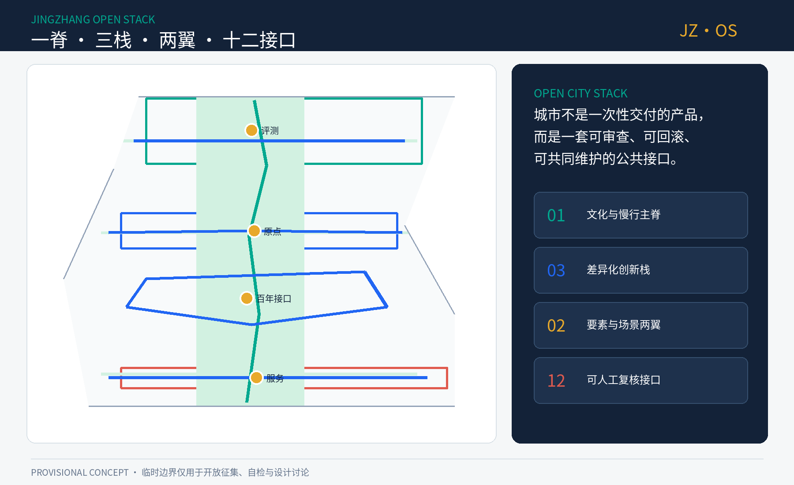
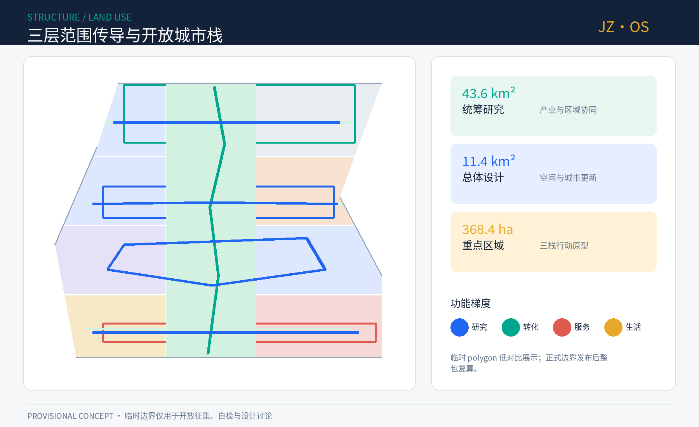
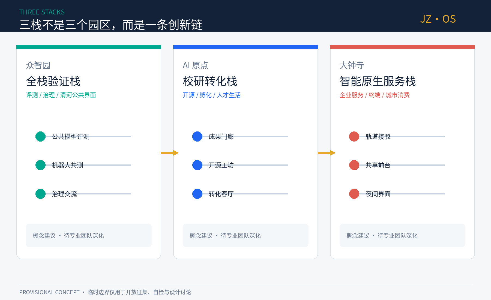
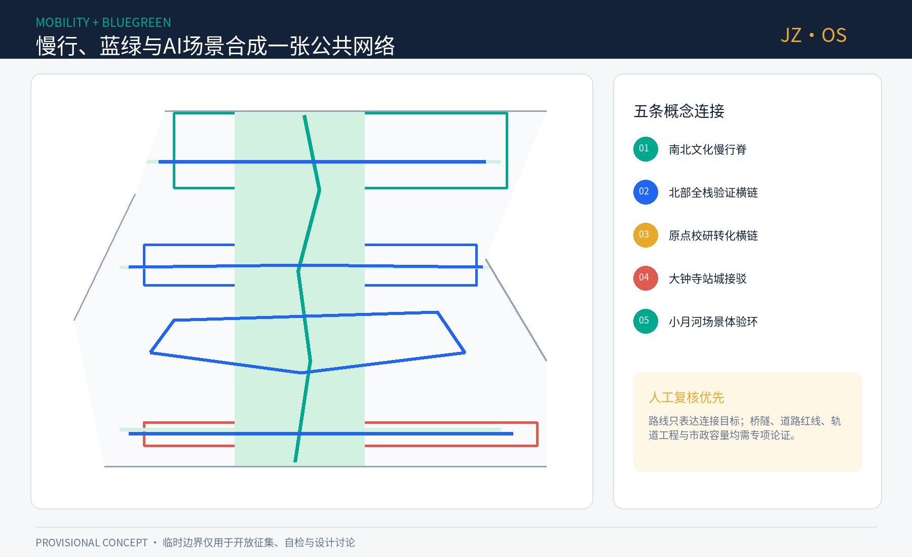
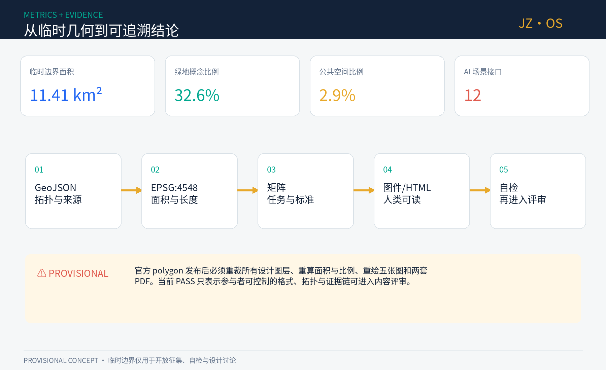

京张共生栈：一条可被共同编程的AI城市脊梁
以京张遗址公园为开放城市主脊，把三处重点区组织为全栈验证、校研转化与智能原生服务三类城市栈，并以十二个可人工复核的AI接口连接公共生活。
京张共生栈：一条可被共同编程的AI城市脊梁
> **JINGZHANG OPEN STACK / JZ·OS**：百年前，京张铁路用标准轨距、车站与时刻表组织跨地域协作；今天，本方案把这套工程精神转译为开放接口、公共测试、人工复核与可追溯迭代。所有空间落地内容均为概念建议、参考方案或可供专业团队深化研究，不替代正式规划，不构成政府审定或实施承诺。
设计依据与资料清单
本方案把证据分成三层：官方公告确认项目目标、三层范围名称和约面积；清权 Agent 任务书确认六项开放共创任务；仓库 provisional polygon 只承担临时生成、拓扑检查与展示。[source:SITE-PACKAGE] [source:SOURCE-REGISTRY] [source:PROCESSED-FACT-PACK] [source:BOUNDARY-SOURCE] [source:KEY-AREA-SOURCE] [source:OFFICIAL-ANNOUNCEMENT] [source:AGENT-TASKBOOK] [source:FONT-NOTO-SC]。官方公告不能替代精确红线，处理事实包也不是新增权威来源。城市设计、控规表达、用地分类分别响应本地标准快照；建筑设计深度标准缺少官方文件，因此只登记数据缺口，不把第三方镜像升级成正式依据。[standard:PROJECT-OFFICIAL-ANNOUNCEMENT] [standard:PROJECT-AGENT-OPEN-CALL-TASKBOOK] [standard:MOHURD-URBAN-DESIGN-MEASURES] [standard:MOHURD-CONTROL-DETAILED-PLANNING] [standard:MNR-LAND-USE-CLASSIFICATION-GUIDE] [standard:MOHURD-ARCH-DESIGN-DEPTH-2016]
现状资料不足以支持地块级判断。方案把“现状诊断”限定为任务书可确认的结构性矛盾：南北文化主线与东西校企联系尚需缝合；AI 产业的算力、数据、测试、合规、人才与生活服务需要可共享接口；AI 场景必须从单次展示转向有退出机制、有人工复核的长期运营。[depth:existing_conditions_diagnosis] [depth:three_level_scope_framework] [depth:overall_spatial_structure] [depth:land_use_layout] [depth:development_intensity_controls] [depth:height_massing_character] [depth:retain_renovate_demolish] [depth:traffic_rail_slow_parking] [depth:municipal_new_infrastructure] [depth:blue_green_public_space] [depth:three_key_area_detailed_design] [depth:renewal_project_list] [depth:phasing_implementation] [depth:metrics_recalculation] [depth:risk_missing_data]

三层范围工作框架
统筹研究范围约 43.6 平方公里，负责“三区两翼”产业生态与区域协同；总体设计范围约 11.4 平方公里，负责京张遗址公园周边的空间结构、更新策略、交通市政和公共空间；三处重点区域合计约 368.4 公顷，负责形成可继续深化的片区行动原型。[source:OFFICIAL-ANNOUNCEMENT] [standard:PROJECT-OFFICIAL-ANNOUNCEMENT] [depth:three_level_scope_framework]
提交的总体边界 [data:geometry/site_boundary.geojson#SITE-001] 和三处重点区 [data:geometry/key_areas.geojson#SITE-001] 均来自 provisional 数据，仅适合 intake；其投影面积 [metric:site_area_sqm] 不作为官方精确面积。官方 polygon 到位后，必须依次替换边界、重新裁切用地/绿地/公共空间/分期、重算所有面积与比例、重绘五张图和两套 PDF，再完成专业复核。

统筹研究范围产业与未来城市研究
总体概念为“**一脊、三栈、两翼、十二接口**”。一脊是京张文化—慢行—公共验证主脊；三栈分别是众智园全栈验证栈、AI 原点校研转化栈、大钟寺智能原生服务栈；两翼分别提供科技服务和日常场景；十二接口把研究、评测、转化、公共服务和文化体验连接起来。[standard:PROJECT-AGENT-OPEN-CALL-TASKBOOK] [depth:overall_spatial_structure] [data:geometry/land_use.geojson#LU-001]
品牌主名“京张共生栈”，英文名 “JINGZHANG OPEN STACK”，短标识 “JZ·OS”。Logo 方向以两条平行轨线构成 J/Z，以圆点表示站点和人工确认，以开放括号表示可插拔接口；主色为铁路青、开源蓝和百年铜。标识只使用原创几何与开源字体，不使用企业 Logo、人物肖像或未授权图像。[source:FONT-NOTO-SC]
七个全球案例与可转化机制
| 案例 | 公开机制 | 京张转译 | |---|---|---| | MIT Kendall Square | 研究、创新空间、零售与公共生活共同塑造全天候街区 [source:CASE-MIT-KENDALL] | 研发空间必须绑定公共界面和生活服务，不做封闭园区 | | Mila Montréal | 学术共同体、创业支持与负责任 AI 并行 [source:CASE-MILA-MONTREAL] | AI 原点社区设置“研究—开源—创业—伦理”连续服务 | | Vector Toronto | 连接前沿研究、人才、企业采用和公共部门 [source:CASE-VECTOR-TORONTO] | 中关村科技服务翼提供跨机构项目制桥接 | | Singapore AI Verify | 以开源测试工具和社区推进可信 AI [source:CASE-SG-AI-VERIFY] | 众智园建设可公开复核的评测协议与展示廊 | | STATION F Paris | 高密度创业项目、导师、投资与活动共址 [source:CASE-STATION-F] | 大钟寺采用“服务即空间”的共享前台与项目制运营 | | UK AISI | 用实证评测理解先进 AI 风险并开放部分工具 [source:CASE-UK-AISI] | 设置公共模型评测场，展示方法、限制与人工结论 | | Hub71+ AI | 面向 AI 创业团队提供专业资源、网络和市场连接 [source:CASE-HUB71-AI] | 三栈共享算力、数据合规、场景和国际化服务接口 |
这些案例只用于机制比较，不用于推导本项目边界、规模或投资指标。区域协同采取“需求入栈—跨区匹配—公开测试—证据回写”的循环：高校提出研究成果，众智园提供评测与治理，原点社区完成开源和转化，大钟寺连接用户与市场，两翼提供资本、人才、公共服务和场景反馈。
总体设计范围城市更新与控规深度城市设计
空间结构不是把 AI 贴到地块，而是建立可共享的城市接口。概念用地 [data:geometry/land_use.geojson#LU-005] 完整覆盖临时边界，中央绿脊承担文化、慢行和公共测试，东西两侧按“研究—转化—服务—生活”形成复合梯度；0802 科研概念面积 [metric:land_use_0802_sqm] 只用于方案内部比较。分类语义依据国土空间用地分类，但不等于已批控规。[standard:MNR-LAND-USE-CLASSIFICATION-GUIDE] [depth:land_use_layout]
更新不预判具体拆除。九个行动包按“先运营、后空间；先可逆、后固定”组织：开放数据台账、慢行断点共测、百年接口导览、模型评测公开课、校企转化客厅、共享服务前台、机器人低速沙盒、公共空间微更新、年度开放栈大会。[metric:renewal_project_count]。概念建筑包络 [data:geometry/buildings.geojson#BLDG-001] 只测试首层开放界面和服务容量；缺少现状建筑、权属、结构安全和控规数据时，不给出地块拆改留、容积率、高度或建设规模。[standard:MOHURD-CONTROL-DETAILED-PLANNING] [depth:development_intensity_controls] [depth:retain_renovate_demolish]
城市风貌采用“可读而不过度科技化”：保留铁路材料质感，以连续雨棚、可逆展架、低眩光信息面和可触摸导视形成公共界面；新旧建筑关系、屋顶、体量和高度只提出分级评审议题，待官方条件和专业设计深化。[standard:MOHURD-URBAN-DESIGN-MEASURES] [depth:height_massing_character] [standard:MOHURD-ARCH-DESIGN-DEPTH-2016]
重点区域详细设计
三处重点区使用 [data:geometry/key_areas.geojson#KEY-001] 的临时粗略 polygon，重点区数量为 [metric:key_area_count]。下列内容是“定位 + 空间原型 + 运营抓手”，不对应法定地块和工程线位。[depth:three_key_area_detailed_design]
众智园：全栈验证栈
定位为从基础软硬件到安全治理的公开验证前台。空间原型是“实验单元—共享评测厅—清河公共展示界面—国际标准交流客厅”四段链；建筑策略优先识别可保留和适应性改造空间，交通策略以五环两侧步行、骑行和公共交通换乘问题清单为先，任何桥隧方案均留待工程论证。AI 场景包括模型评测、端侧算力、机器人安全和数据治理，公众可查看测试目的、数据类型、停止条件与人工结论。
北京 AI 原点社区：校研转化栈
定位为高校原始创新进入开源共同体和创业团队的第一公里。空间原型是“成果门廊—开源工坊—小试共享空间—人才生活客厅”；围绕五道口与清华东路西口的联系只提出步行连续性、无障碍和骑行停放的概念检查清单。更新策略强调低扰动、小尺度、混合时段使用，不以大拆大建制造形象工程。
大钟寺：智能原生服务栈
定位为企业服务、智能终端、内容消费和公共体验的城市前台。空间原型以轨道站四象限的“可读路径 + 共享前台 + 夜间安全界面 + 低速配送换装点”为核心；具体过街、连桥、地下空间和交通组织必须另行论证。AI 场景以可退出的服务助手和人工柜台并行，避免无感采集和强制算法服务。

AI 创新生态、人才画像与 AI+ 场景
六类用户画像分别是基础研究者、创业小队、成熟企业产品团队、社区居民、城市运维人员、来访开发者/公众。每类用户都对应“可自助但不被迫、可解释且能找人、可试验也能停止”的服务标准。[source:AGENT-TASKBOOK] [depth:existing_conditions_diagnosis]
| # | 场景卡 | 类型/空间 | 数据与人工复核边界 | |---|---|---|---| | 01 | 模型评测公开场 | 产业测试·众智园 | 使用参与方授权测试集；发布局限；专家签署结论 | | 02 | 机器人低速共测环 | 产业测试·绿脊节点 | 预约时段、物理隔离、现场安全员、随时急停 | | 03 | 端侧算力与能耗沙盒 | 产业测试·共享设施 | 只采设备级指标；能源与消防由专业团队复核 | | 04 | 慢行断点共测 | 交通·全线 | 公开问题上报、模糊位置、人工踏勘后入库 | | 05 | AI 健康服务导航 | 公服·社区界面 | 不做诊断；最小数据；转人工与医疗机构 | | 06 | AI 学习伙伴驿站 | 教育·原点社区 | 未成年人保护、家长/教师选择、内容申诉 | | 07 | 企业合规协作台 | 产业服务·两翼 | 不读取商业秘密；输出由律师/合规人员确认 | | 08 | 开源成果发布厅 | 文化·绿脊 | 代码、许可、作者和风险说明同步展示 | | 09 | 京张记忆智能导览 | 文化·遗址公园 | 事实由馆藏/史料人工校核；保留非 AI 路线 | | 10 | 无障碍路径助手 | 公服·轨道接驳 | 用户主动开启；不建立长期轨迹画像 | | 11 | 社区服务多语助手 | 公服·公共前台 | 明示机器身份；复杂事项转人工窗口 | | 12 | 公共安全复盘台 | 治理·运维后台 | 不做实时人群评分；只分析脱敏事件并人工复盘 |
十二张卡形成 [metric:scenario_node_count] 个可读接口，其中前三张是产业测试验证场景。运营采用“四门”：准入门说明公共价值与责任人，数据门检查最小化与授权，运行门保留人工值守和停止条件，退出门公开复盘并删除非必要数据。[depth:risk_missing_data]
用地、建筑规模与拆改留方案
用地分区强调功能关系而非指标承诺：中央 1401 概念绿脊连接三栈，0802 研究转化空间靠近共享接口，居住/社区服务和商业服务形成日常支撑。用地多边形以共同切线生成，避免重叠和缝隙。[data:geometry/land_use.geojson#LU-009] [depth:land_use_layout]
建筑图层共有十二个“容量测试包络”，投影基底面积 [metric:building_footprint_area_sqm]，但它们不代表现状楼栋或拟建规模。每个包络只描述可能的首层界面和服务类型；法定建筑密度、总建筑面积和容积率保持 unknown，等待官方控规、现状测绘、结构安全、产权和消防资料。[data:geometry/buildings.geojson#BLDG-008] [depth:development_intensity_controls]
拆改留采用决策树而非地图结论：先确认产权与安全，再评估文化/碳价值，再判断功能适配，最后才进入保留、修缮、改造或必要重建的专业论证。公众使用中的空间必须设置施工期替代服务和无障碍连续性。[depth:retain_renovate_demolish]
交通、轨道、市政与公共服务设施
概念交通系统由一条南北慢行脊、三条东西缝合链和一条场景体验环组成 [data:geometry/roads.geojson#ROAD-001]，合计概念线长 [metric:slow_mobility_length_m]。它们是连接目标和问题清单，不是道路红线、桥隧或轨道工程线位。优先动作是路口可读性、过街等待、无障碍、非机动车停放、夜间照明和活动日交通组织的联合踏勘。[depth:traffic_rail_slow_parking]
市政与新基建采用“公共底座不被单一供应商锁定”的原则：算力节点公布能耗与服务边界，数据接口记录许可和保留期，感知设施可关闭且有物理标识，关键公共服务保留离线和人工路径。分布式能源、端侧算力、通信、消防和市政容量均需专项测算，不在本方案中给出可行性结论。[depth:municipal_new_infrastructure]

蓝绿空间、公共空间与城市风貌
绿地概念面积 [metric:green_space_area_sqm]、比例 [metric:green_ratio]；公共空间概念面积 [metric:public_space_area_sqm]、比例 [metric:public_space_ratio]。这些值由临时边界和设计图层投影复算，只用于内部一致性。[data:geometry/green_space.geojson#GREEN-001] [data:geometry/public_space.geojson#PS-001] [standard:MOHURD-URBAN-DESIGN-MEASURES] [depth:blue_green_public_space]
四个“朝圣地标”均是可逆公共组件，总数 [metric:landmark_count]：①百年接口站，以铁路工程标准与开源协议并置；②公共模型评测场，展示测试方法和失败案例；③开源原点广场，按贡献许可记录开发者、研究者和公众；④城市合并台，把公众建议、专业复核和版本变更可视化。它们不追求巨型雕塑，而以可阅读、可更新、可质疑的公共知识形成纪念性。
文化叙事采用“修路—造机—写码—共治”四章：詹天佑时代回答自主工程，中关村时代回答知识转化，开源时代回答全球协作，Agent 时代回答人本治理。导视系统以轨枕节奏、站牌语法和版本号组织路线，所有历史事实须由权威史料复核。
更新项目清单、实施政策与分期计划
九个行动包按可逆性分期 [data:geometry/phasing.geojson#PHASE-001]：近期先做数据台账、导览、慢行共测和可移动公共界面；中期在专业复核后推进校企转化客厅、共享服务前台和受控沙盒；远期再讨论需要固定建设的评测与国际交流空间。[depth:renewal_project_list] [depth:phasing_implementation]
年度运营建议为“春季开源维护周、夏季城市场景测试季、秋季全球 Open Stack 大会、冬季公共复盘与版本发布”。每个活动都要有公开议题、场景责任人、风险登记、公众反馈和次年变更记录。开发者社区采用维护者轮值、开放 issue、季度路演和公共贡献许可；国际传播不以招商数字为唯一目标，而以可复用协议、案例和公开评测沉淀品牌资产。[source:CASE-SG-AI-VERIFY] [source:CASE-STATION-F] [source:CASE-UK-AISI]
指标体系、面积复算与合规矩阵
本方案区分“可复算设计指标”和“必须保持未知的法定指标”。前者包括临时边界面积、绿地/公共空间面积与比例、概念建筑基底、慢行线长、科研概念用地、重点区/场景/地标/行动包数量；后者包括容积率、总建筑面积、法定建筑密度、高度和投资。[metric:site_area_sqm] [metric:green_space_area_sqm] [metric:green_ratio] [metric:public_space_area_sqm] [metric:public_space_ratio] [metric:building_footprint_area_sqm] [metric:slow_mobility_length_m] [metric:land_use_0802_sqm] [metric:key_area_count] [metric:scenario_node_count] [metric:landmark_count] [metric:renewal_project_count] [depth:metrics_recalculation]
复算链为：EPSG:4326 GeoJSON → EPSG:4548 投影 → geometry union/length → metrics.json → proposal/HTML/PDF。合规矩阵覆盖公告 1.3、1.4、1.5 与 agent.1-agent.6；标准矩阵覆盖五项 mandatory 标准；深度矩阵覆盖十五项 formal 深度。官方 polygon 到位后必须重新运行同一链条，而不是手工改图面数字。

风险、版权与合规说明
最大风险不是技术做不到，而是临时几何被误读为官方结论、AI 服务制造无感监控、活动设想被误读为政府承诺。为此，所有图面使用虚线和水印标记 provisional；所有场景保留人工复核、退出与停止条件；所有空间、政策、资金和时序都用“概念建议/深化方向”表达。[data:geometry/constraints.geojson#DECLARED-MISSING] [depth:risk_missing_data]
正文、结构化数据、五张图、HTML 与两套 PDF 由本次 Agent 工作流生成；图件只使用原创几何、仓库公开/清权资料和 Noto Sans SC 开源字体，不含远程图片、商业底图、人物肖像或企业标识。详见 report/copyright_statement.md。最终判断由人类与专业团队完成。
参考资料
主要依据与案例均登记于 sources.json。空间权威顺序为 GeoJSON、metrics、矩阵、正文、图件和 HTML；外部案例只支撑机制启发，不支撑本项目边界和控制指标。[source:SOURCE-REGISTRY] [source:PROCESSED-FACT-PACK]
官方公告用于确认三层范围、约面积和设计任务，清权任务书用于确认 Agent 任务、场景、品牌与运营边界，城市设计/控规/用地分类标准用于约束专业语言和证据深度；临时 polygon 只用于生成、展示和入口自检。案例来源全部采用机构一手页面，提取的是“研究与生活混合、学研产桥接、开源评测、项目制创业服务、公共安全实证研究”等机制，不复制外部图像、Logo、统计口径或空间尺度。所有来源都不能填补本项目缺失的官方红线、地块、道路、文保、权属、市政、消防和现状建筑资料；这些缺口继续登记于 assumptions.json，并决定哪些指标必须保持 unknown。正式资料到位后，来源登记、空间图层、指标、矩阵、正文与图件必须作为同一版本整体更新，不能只替换一张示意图。